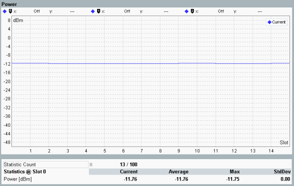

Detailed Views: Power
The detailed view shows a diagram and a statistical overview of one-slot results.

WCDMA NodeB multi-evaluation: power
Transmitter output power of the NodeB, measured in a bandwidth of at least (1+α) times the chip rate, where α is the roll-off factor of the WCDMA channel filter. The NodeB power corresponds to the mean power level per carrier defined in 3GPP TS 25.141, section 6.2.
The diagram covers a time interval of 15 slots. The "Current" traces contain one measurement result per slot. The result is calculated as the average of the measured quantity of all samples in the slot, excluding a 25 μs guard period at the beginning and end.
For additional information, refer to "Common View Elements".